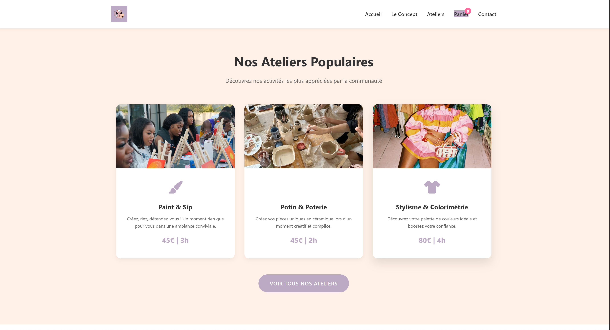

Creation de sites web professionnels
Sites modernes, rapides et penses pour convertir — UX/UI soigne, SEO technique, mobile-first.
WordPressSur-mesureSEO
Des sites et des strategies penses pour convertir, renforcer votre image et generer des clients avec une approche sur-mesure, humaine et premium.

Services complementaires pour une presence en ligne coherente et rentable. Chaque prestation est sur devis, adaptee a vos besoins.
Sites modernes, rapides et penses pour convertir — UX/UI soigne, SEO technique, mobile-first.
Strategie editoriale, contenus premium, community management et optimisation continue.
Diagnostic complet + plan d'action 30-90 jours pour gagner en visibilite et performance.
Marque coherente et premium — direction artistique, charte digitale, univers visuel.
Meryne Studio est une application pensee pour les createurs de contenu et les marques qui veulent reprendre le controle de leur presence sur les reseaux sociaux avec des outils concrets, visuels et intuitifs.
🔒 Application independante accessible via abonnement dedie
Pas de packs impersonnels. Des solutions sur-mesure adaptees a vos objectifs et votre budget.
4 etapes orientees resultats, du brief a l'optimisation continue.
Des realisations concretes qui illustrent l'impact d'une presence digitale bien construite.

Site vitrine moderne oriente conversion pour un cabinet professionnel.
Creation web
Accompagnement complet — strategie editoriale, contenus et community.
Social Media
Direction artistique et charte graphique pour une marque ambitieuse.
Branding"Meryne et son equipe ont completement transforme notre presence en ligne. Professionnel, rapide et ca genere vraiment des demandes."
— Cabinet Millon-Devigne
"Un accompagnement serieux, humain et oriente resultats. Notre communaute a vraiment grandi depuis qu'on travaille ensemble."
— EPANA Woman
Contactez-nous pour echanger sur votre projet et recevoir un devis sur-mesure.